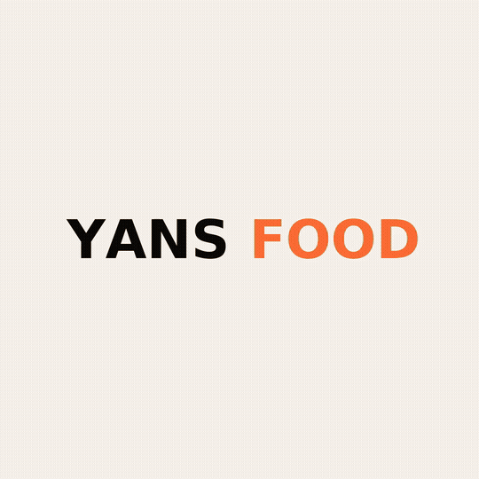
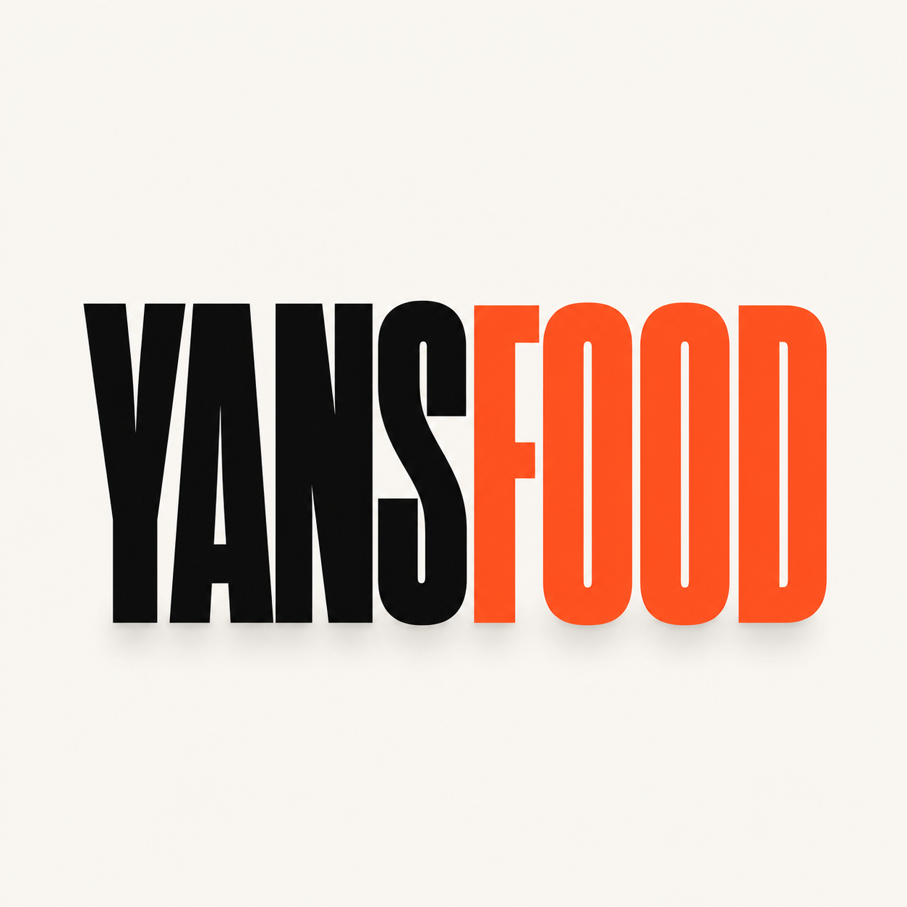
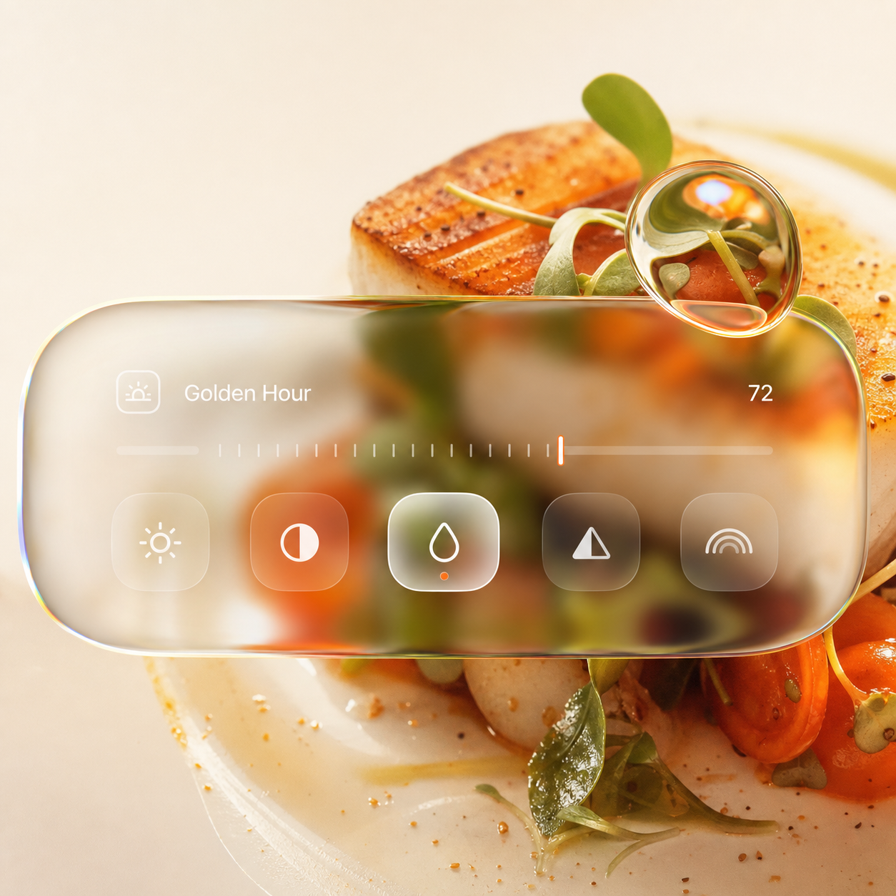
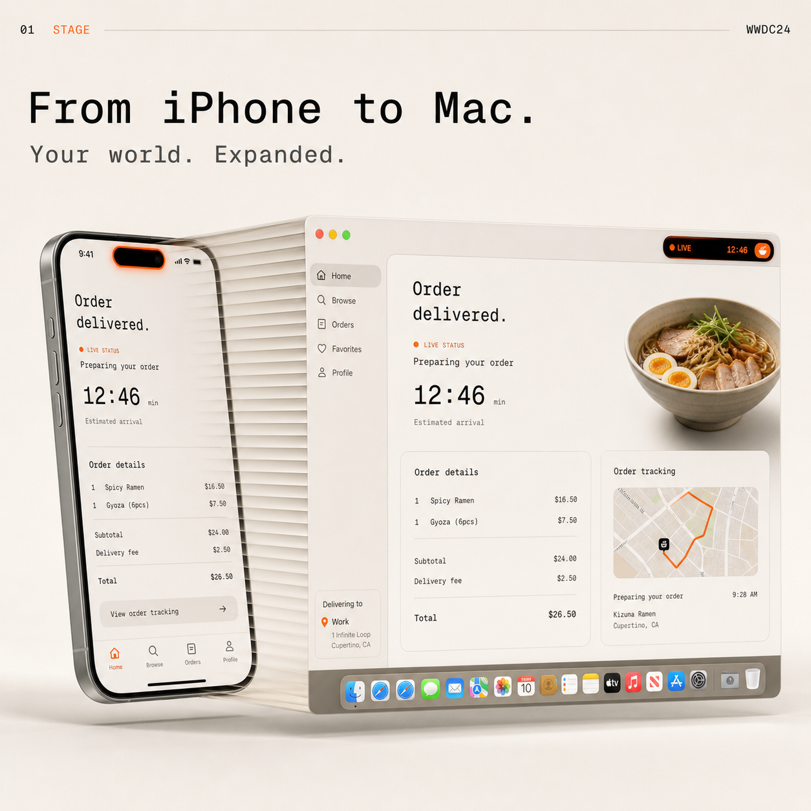
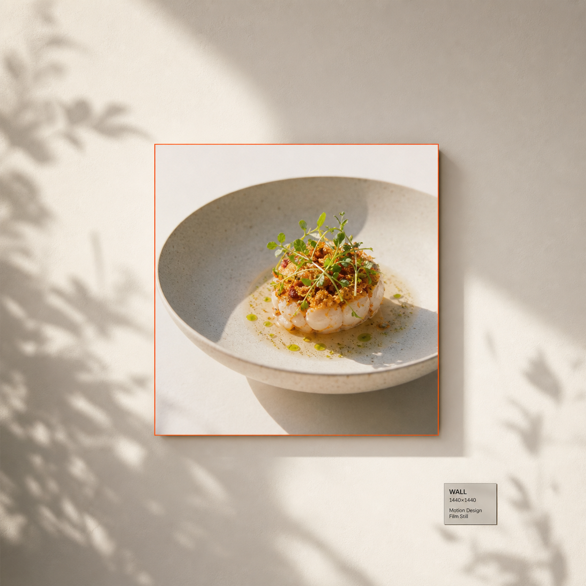

seek(frame / 60).| Cue Visuel | Beat Musical (120 BPM) | Temps | Frame (60 fps) | Scène | Action & Évolution Visuelle (Labels Français) | SFX & Fil Orange #FF6B35 |
|---|---|---|---|---|---|---|
| Cue 01 | Beat 01.0 | 0,000 s | F000 | OPEN | Wordmark plein écran : YANS⬛ + FOOD🟠 (Archivo wdth 125 wght 800). | Downbeat Kick EDM |
| Cue 02 | Beat 02.0 | 0,500 s | F030 | SQUEEZE | Squeeze accordion : YANS converge vers la droite, FOOD vers la gauche. wdth 125 → 0. | Wipe whoosh sub |
| Cue 03 | Beat 03.0 | 1,000 s | F060 | PILL | Point bicolore grossit en pill noire + trait orange (évocation boîte repas). | pop.wav |
| Cue 04 | Beat 04.0 | 1,500 s | F090 | IRIS CLOSE | Clic curseur → iris 6 lames ferme sur la pill. YANS sort à gauche, FOOD à droite. | click.wav + iris.wav |
| Cue 05 | Beat 05.0 | 2,000 s | F120 | IRIS OPEN | Iris snap-open → Poulet DG révélé (3 500 FCFA). Le masque rond se détend en carré. | iris.wav snap |
| Cue 06 | Beat 06.0 | 2,500 s | F150 | GRID UNROLL | Le carré rétrécit au centre, grille de découverte de plats dépliée façon carte de restaurants. | Paper unfold sweep |
| Cue 07 | Beat 07.0 | 3,000 s | F180 | BENTO | La grille reflue en bento 3×3 (spécialités camerounaises réelles) sur springs décalés. | Stagger pop |
| Cue 08 | Beat 08.0 | 3,500 s | F210 | ZOOM DROP | Curseur plonge sur la case centrale, zoom studio ×4 sur le Poulet DG → DROP MUSIQUE. | Impact Drop EDM (Kick + Sub) |
| Cue 09 | Beat 09.0 | 4,000 s | F240 | GLASS POP | Mot « GLASS » pop lettre par lettre avec spring closed-form individuel. | glass.wav + pop.wav |
| Cue 10 | Beat 10.0 | 4,500 s | F270 | DROPLET | Lettres fondent en metaball (distance field + seuil alpha) en une goutte liquide. | Liquid morph tick |
| Cue 11 | Beat 11.0 | 5,000 s | F300 | TOOLBAR | La goutte s'étire en toolbar glass horizontale iOS 26 (feDisplacementMap). | Glass stretch tone |
| Cue 12 | Beat 12.0 | 5,500 s | F330 | SLIDER | L'icône adjust s'active, le curseur de rééclairage se matérialise avec repères. | click.wav |
| Cue 13 | Beat 13.0 | 6,000 s | F360 | RELIGHT | Le curseur est tiré : le Poulet DG passe de lumière jour à golden hour #FF6B35. | Warm riser sweep |
| Cue 14 | Beat 14.0 | 6,500 s | F390 | LENS | Le knob est maintenu en long-press : il se détache en loupe réfractive circulaire. | Detent pop |
| Cue 15 | Beat 15.0 | 7,000 s | F420 | ORB | La loupe prend de la hauteur en 3D et devient une orbe de verre liquide avec aberration. | Harmonic glass ring |
| Cue 16 | Beat 16.0 | 7,500 s | F450 | PHOTO #2 | Plat #2 (Riz Jollof 2 500 FCFA) s'ouvre à l'intérieur de l'orbe par dilatation radiale. | Sub bloom |
| Cue 17 | Beat 17.0 | 8,000 s | F480 | LOCKSCREEN | L'orbe expand et plaque le lockscreen iOS (horloge de verre, date Geist Mono). | Lock chime tick |
| Cue 18 | Beat 18.0 | 8,500 s | F510 | MUSIC BAR | La home bar inférieure s'épaissit et s'étire en widget statut de commande en verre. | UI spring swish |
| Cue 19 | Beat 19.0 | 9,000 s | F540 | STAGE IPHONE | L'écran recule en perspective studio, le châssis titane de l'iPhone apparaît avec reflets. | Camera pan whoosh |
| Cue 20 | Beat 20.0 | 9,500 s | F570 | DYNAMIC ISLAND | Dynamic Island s'étire fluide, pulse orange 1 beat, s'envole en fenêtre Mac. | Elastic pop + whoosh |
| Cue 21 | Beat 21.0 | 10,000 s | F600 | BLINDS | La fenêtre se déroule verticalement comme un store vénitien à lames d'aluminium. | Venetian blind rattle |
| Cue 22 | Beat 22.0 | 10,500 s | F630 | DRAG & DROP | Long-press sur le plat, drag direct dans le panier de l'application YansFood. | Pick & drop tick |
| Cue 23 | Beat 23.0 | 11,000 s | F660 | HERO LANDING | Push-in brutal dans la page : drop du hero landing page avec typographie massive YansFood. | Snappy bass slam |
| Cue 24 | Beat 24.0 | 11,500 s | F690 | BREAKDOWN | BREAKDOWN CALME : La hero page se replie en carte produit premium dans un print flottant. | Filter low-pass cut |
| Cue 25 | Beat 25.0 | 12,000 s | F720 | MOULDING | Le passe-partout et la moulure biseautée poussent hors du bord de la photo food. | Frame latch tick |
| Cue 26 | Beat 25.5 (micro) | 12,250 s | F735 | COLOR SWEEP | Color picker pipette : un trait de peinture laque orange #FF6B35 balaie le cadre intérieur. | Paint sweep swish |
| Cue 27 | Beat 26.0 | 12,500 s | F750 | COMMANDER | Sélecteur de portion, bouton principal descend au premier plan : « Commander · 3 500 FCFA ». | Pill slide tick |
| Cue 28 | Beat 26.5 (micro) | 12,750 s | F765 | BLACK FLOOD | Clic sur le bouton → Flood noir (#0A0A0A) s'étend en cercle géant overscalé au-delà des 4 coins. | flood.wav (whoosh profond) |
| Cue 29 | Beat 27.0 | 13,000 s | F780 | CONFIRMÉE ✓ | Pill centrale blanche sur fond noir : « Commande confirmée ✓ » (MoMo / Orange Money). | order.wav (mixkit notif) |
| Cue 30 | Beat 27.5 (micro) | 13,250 s | F795 | EN PRÉPARATION | Morphe en « En préparation ░░▓▓▓ », la jauge de cuisine progresse en #FF6B35. | Ratchet progress |
| Cue 31 | Beat 28.0 | 13,500 s | F810 | EN ROUTE | Morphe en carte GPS : « En route / Prêt à récupérer » avec van orange sur tracé SVG. | Electric motor zip |
| Cue 32 | Beat 28.5 (micro) | 13,750 s | F825 | COMMANDE PRÊTE | Arrivée au point relais : explosion en check géant orange #FF6B35 « Commande prête ✓ ». | delivered.wav (mixkit success) |
| Cue 33 | Beat 29.0 | 14,000 s | F840 | FLOOD CUT | Le cercle du check s'étend à l'infini : écran noir pur pendant 1 beat de respiration et suspension. | Silence de ponctuation |
| Cue 34 | Beat 29.5 (micro) | 14,250 s | F855 | WALL FOOTAGE | Le noir se contracte : révélation du vrai mur vidéo avec ombres de plantes douces. Cadre avec lisière orange 2px. | Iris snap in |
| Cue 35 | Beat 29.75 (micro) | 14,500 s | F870 | FINAL IRIS | L'iris 6 lames se referme à toute vitesse sur le print central, concentrant toute l'énergie. | iris.wav (snap rapide) |
| Cue 36 | Beat 30.0 (Return) | 14,750 s | F885 | YANSFOOD RETURN | SLAM FINAL : YANS⬛ spring-in de gauche + FOOD🟠 spring-in de droite. Collision = YANSFOOD complet. Promesse : « TON REPAS, SANS LA FILE. » + Badges App Store / Google Play (tenue > 0,8 s). | Return Beat + Sub Impact |
| Boucle | Beat 30.0 (End) | 15,000 s | F900 = F000 | BOUCLE PARFAITE | F900 = F000 à 60 fps : Raccord boucle parfait sans couture sur le downbeat musical. | Loop downbeat sync |